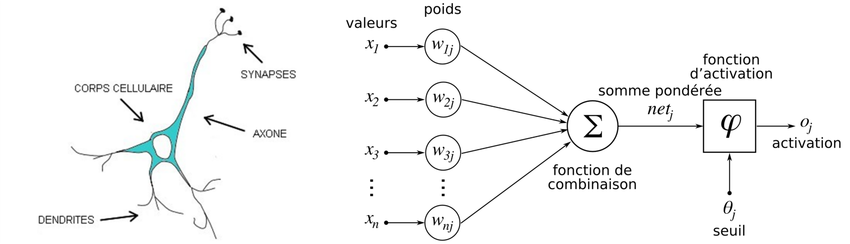
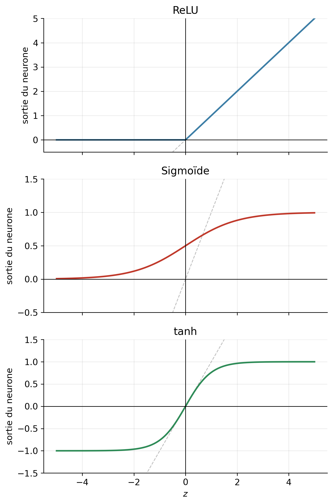
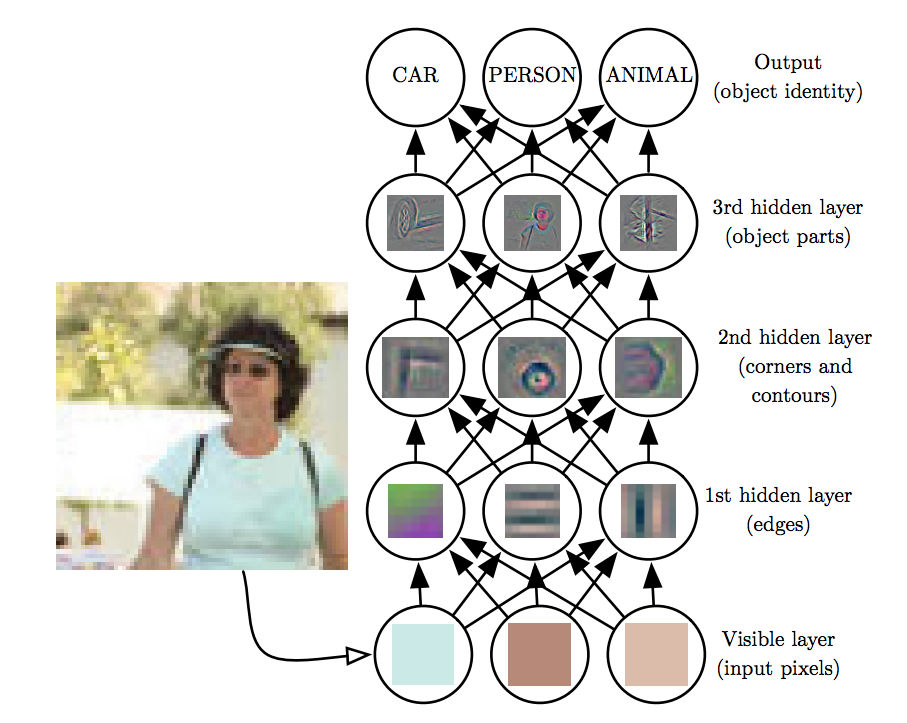

flowchart LR fw(["prédiction<br/>model(X)"]) --> loss(["coût<br/>cost_function"]) loss --> bw(["calcul des pentes<br/>cost.backward()"]) bw --> upd(["mise à jour<br/>optimizer.step()"]) upd -- "epoch suivante" --> fw classDef step fill:#f3f1ec,stroke:#6d6c66,stroke-width:1.5px,color:#2c2c2a; classDef back fill:#e3edf8,stroke:#2f6fb0,stroke-width:2px,color:#2c2c2a; class fw,loss step; class bw,upd back;
CM2 - Réseaux de neurones
1 Du TP1 à PyTorch
1.1 Rappel du cours 1
Entraîner un modèle, c’est répéter la même boucle jusqu’à ce que le coût ne baisse plus :
- prédire : calculer \(\hat{y} = f(x)\) pour tous les exemples, avec les paramètres actuels (\(w\) et \(b\)) ;
- mesurer l’erreur : le coût \(J\), la moyenne des carrés des écarts (MSE) ;
- calculer les pentes : dans quel sens faut-il modifier chaque paramètre pour faire baisser le coût ;
- mettre à jour : faire un pas dans ce sens, de taille réglée par le taux d’apprentissage \(\alpha\).
Au TP1b, vous avez écrit vous-même les pentes (dJ_dw, dJ_db) et la mise à jour (update_model). Avec 2 paramètres, c’est faisable. Un réseau de neurones en a des milliers, un LLM des milliards.
1.2 PyTorch
PyTorch est une bibliothèque Python qui fait ce travail pour nous : elle calcule les pentes automatiquement, quel que soit le modèle, et fournit des briques toutes prêtes.
1.2.1 Les tenseurs
Un tenseur (tensor) est un tableau de nombres. Sa forme (shape) donne le nombre d’éléments dans chaque dimension. Les données sont toujours rangées de la même façon : une ligne par exemple, une colonne par caractéristique.
X = torch.tensor([[45.0], [60.0], [100.0]]) # 3 appartements, 1 caractéristique (la surface)
X.shape # torch.Size([3, 1])
X * 2 # chaque élément est multiplié par 2 : plus besoin de boucle1.2.2 Les briques
| Cours 1 / TP1 | PyTorch |
|---|---|
| le modèle \(f(x) = wx + b\) | model = nn.Linear(1, 1) |
| la prédiction | Y_pred = model(X) |
| le coût MSE | cost_function = nn.MSELoss() |
| la descente de gradient, de taux \(\alpha\) | optimizer = torch.optim.SGD(model.parameters(), lr=alpha) |
Un modèle complet s’écrit comme une classe qui hérite de nn.Module, avec deux méthodes :
__init__déclare les couches, c’est-à-dire les paramètres à entraîner ;forwardcalcule la prédiction. PyTorch l’appelle quand on écritmodel(X).
class LinearModel(nn.Module):
def __init__(self):
super().__init__()
self.linear = nn.Linear(1, 1)
def forward(self, x):
return self.linear(x)1.2.3 La boucle d’entraînement
Chaque epoch enchaîne toujours les 4 mêmes étapes, quel que soit le modèle :
for epoch in range(epochs):
Y_pred = model(X) # 1. prédiction
cost = cost_function(Y_pred, Y) # 2. coût
cost.backward() # 3. calcul des pentes
optimizer.step() # 4. mise à jour des paramètres
optimizer.zero_grad() # remise à zéro des pentes pour l'epoch suivante
NoteCalculer les pentes n’est pas mettre à jour les paramètres
Ce sont deux étapes distinctes, souvent confondues :
cost.backward()calcule les pentes. Il ne modifie aucun paramètre.optimizer.step()utilise ces pentes pour mettre à jour les paramètres : c’est la descente de gradient.
Une fois le modèle entraîné, on l’utilise en inférence, dans un bloc with torch.no_grad(): : PyTorch n’a plus besoin de garder la trace des calculs pour les pentes.
with torch.no_grad():
price = model(torch.tensor([[45.0]])) # un appartement de 45 m²2 TP2a — Régression linéaire avec PyTorch
Dans le projet tp2_neural_net, ouvrez le notebook tp2a_pytorch.ipynb et suivez les instructions.
3 Réseaux de neurones
Un réseau de neurones artificiel (artificial neural network, ANN) est inspiré du fonctionnement du cerveau.

3.1 Neurone biologique
- Un neurone génère un signal s’il y a assez de signaux d’entrées dans les dendrites
- Les neurones reçoivent les entrées depuis d’autres neurones en amont, et transmettent des signaux à d’autres neurones en aval
- Chaque neurone a son propre seuil d’activation. Lorsque le seuil est atteint, le neurone émet une impulsion électrique qui parcourt l’axone jusqu’aux neurones en aval. En dessous du seuil, il ne se passe rien.
3.2 Neurone artificiel
- Les entrées sont les données \(x_1, \ldots, x_D\)
- On multiplie chaque entrée par un poids \(w_i\), puis on somme le résultat
- Une fonction d’activation renvoie un résultat, qui est utilisé dans la couche de neurones suivante.
| Neurone biologique | Neurone artificiel | Explication |
|---|---|---|
| Dendrites | Entrées \(x_1, \ldots, x_D\) | entrées |
| Synapses | Poids \(w_i\) | module la force du signal d’entrée |
| Potentiel de membrane | Somme pondérée \(\sum_i w_i x_i\) | somme pondérée |
| Seuil d’activation | Biais \(b\) + fonction d’activation | décide si le neurone s’active |
NoteUn peu d’histoire (facultatif)
Les ANN ont été inventés en 1943. Il y avait initialement un grand engouement pour ce modèle, notamment avec l’invention du perceptron dans les années 50. Mais les limitations du modèle initial à une seule couche ont engendré une baisse de la recherche dans le domaine. C’était l’“hiver de l’IA”, dans les années 1970-1980.
La recherche s’est ravivée dans les années 80 avec le développement des réseaux multi-couches entraînés avec la rétropropagation (backpropagation). Depuis les années 2000, l’arrivée de données massives grâce à internet et l’amélioration du hardware ont fait décoller les usages.
Pour donner un ordre de grandeur : un cerveau humain compte environ 86 milliards de neurones reliés par \(10^{14}\) synapses, là où un grand modèle de langage comme GPT-3 n’a que 175 milliards (\(1{,}75 \times 10^{11}\)) de paramètres.
3.3 Justification
Notre modèle en transformation linéaire est trop simple :
- le prix n’évolue pas forcément de manière linéaire. Par exemple, les quartiers chers de Bordeaux sont au centre : le prix monte quand on s’approche du centre, puis redescend de l’autre côté. Une droite ne peut pas faire ça. Il faudrait pouvoir “courber” notre fonction
f. Nous allons pour cela ajouter une fonction d’activation. - il faudrait qu’il prenne en compte d’autres caractéristiques : nombre de pièces, localisation, étiquette DPE, …
4 Fonction d’activation
Une ligne droite ou un plan ne permet en général pas de modéliser un problème complexe. Nous aurions besoin d’ajouter des “courbes” ou “plis” à notre tracé. Il faut pour cela appliquer une fonction non-linéaire à la sortie de notre transformation linéaire. Nous appelons cette fonction la fonction d’activation.
4.1 Un neurone avec une dimension
Notre modèle devient un neurone artificiel à une seule dimension :
- il calcule \(wx + b\), comme la régression linéaire : c’est la pré-activation, notée \(z\) ;
- il applique à \(z\) une fonction d’activation, notée \(\sigma\).
flowchart LR
x(["x"])
subgraph neuron ["neurone"]
direction LR
z(["z = wx + b<br/>――――<br/>nn.Linear(1, 1)"]) --> s(["σ(z)<br/>――――<br/>nn.ReLU()"])
end
x -- "w" --> z
s --> y(["f(x)"])
classDef neuron fill:#e7e3f7,stroke:#5b52c4,stroke-width:1.5px,color:#2c2c2a;
classDef input fill:#f3f1ec,stroke:#6d6c66,stroke-width:1.5px,color:#2c2c2a;
class z,s neuron;
class x,y input;
style neuron fill:none,stroke:#d8d6cd,stroke-dasharray:4 4;
NoteLa formule (facultatif)
\[f(x) = \sigma(\underbrace{wx + b}_{z})\]
En PyTorch :
linear = nn.Linear(1, 1) # 1 entrée, 1 sortie : un poids w et un biais b
activation = nn.ReLU() # σ : la fonction d'activation
z = linear(x) # z = wx + b
y = activation(z) # f(x) = σ(z)En apprentissage machine, nous utiliserons l’une de ces 3 fonctions :
| Nom | PyTorch | Valeurs de sortie | Utilisation |
|---|---|---|---|
| ReLU (Rectified Linear Unit) | nn.ReLU() |
\([0, +\infty[\) | Choix par défaut dans les couches cachées (hidden layers) : simple et rapide à calculer |
| Sigmoïde (sigmoid) | nn.Sigmoid() |
\(]0, 1[\) | Couche de sortie d’une classification binaire (binary classification) : donne une probabilité |
| Tangente hyperbolique (tanh) | nn.Tanh() |
\(]-1, 1[\) | Couches cachées, quand on veut une sortie centrée sur 0 |
NoteLes formules (facultatif, ne pas retenir)
| Nom | Formule |
|---|---|
| ReLU | \(\mathrm{ReLU}(z) = \max(0, z)\) |
| Sigmoïde | \(\mathrm{sigmoid}(z) = \dfrac{1}{1 + e^{-z}}\) |
| tanh | \(\tanh(z) = \dfrac{e^{z} - e^{-z}}{e^{z} + e^{-z}}\) |

NoteÀ observer sur ces courbes
- ReLU : la sortie est nulle tant que \(z < 0\) — le neurone reste éteint. Au-delà, elle suit exactement \(z\). Le “pli” en \(z = 0\) suffit à casser la linéarité.
- Sigmoïde : la sortie est écrasée entre 0 et 1, ce qui se lit comme une probabilité. Loin de 0, la courbe devient plate : le neurone sature et n’apprend presque plus.
- tanh : même forme en S que la sigmoïde, mais centrée sur 0 et allant de -1 à 1.
4.2 Activité : modèle avec un seul neurone
Cliquez sur ce lien : Modèle à un neurone.
Le but : ajuster la courbe aux points le mieux possible (curve fitting). Utilisez le coût pour vous guider.
4.3 Trois neurones avec une dimension
On constate qu’un seul neurone ne permet pas de modéliser correctement certaines formes, comme la bosse du prix au m² autour du centre-ville.
On utilise alors 3 neurones, répartis en deux couches :
- la couche cachée (hidden layer) : deux neurones qui reçoivent la même entrée \(x\), mais avec chacun ses propres paramètres ;
- la couche de sortie (output layer) : un seul neurone, qui combine les sorties des deux neurones cachés.
Le modèle possède maintenant 7 paramètres : un poids et un biais pour chacun des deux neurones cachés, deux poids et un biais pour le neurone de sortie.
Ce modèle se représente sous forme de graphe de calcul : chaque cercle est un neurone, chaque flèche porte un poids.
flowchart LR
x(["x"])
subgraph hidden ["couche cachée"]
direction TB
h1(["h₁"])
h2(["h₂"])
hcode["nn.Linear(1, 2)<br/>↓<br/>nn.ReLU()"]
end
subgraph output ["couche de sortie"]
direction TB
f(["f(x)"])
ocode["nn.Linear(2, 1)"]
end
x -- "w<sub>1</sub><sup>[1]</sup>" --> h1
x -- "w<sub>2</sub><sup>[1]</sup>" --> h2
h1 -- "w<sub>1</sub><sup>[2]</sup>" --> f
h2 -- "w<sub>2</sub><sup>[2]</sup>" --> f
classDef neuron fill:#e7e3f7,stroke:#5b52c4,stroke-width:1.5px,color:#2c2c2a;
classDef input fill:#f3f1ec,stroke:#6d6c66,stroke-width:1.5px,color:#2c2c2a;
classDef n1 fill:#fbeae2,stroke:#c4562c,stroke-width:2px,color:#2c2c2a;
classDef n2 fill:#e3edf8,stroke:#2f6fb0,stroke-width:2px,color:#2c2c2a;
class f neuron;
class h1 n1;
class h2 n2;
class x input;
classDef code fill:none,stroke:none,color:#5b52c4,font-family:monospace;
class hcode,ocode code;
%% One colour per hidden neuron, carried by its two arrows, as in the formulas.
linkStyle 0,2 stroke:#c4562c,stroke-width:2px;
linkStyle 1,3 stroke:#2f6fb0,stroke-width:2px;
style hidden fill:none,stroke:#d8d6cd,stroke-dasharray:4 4;
style output fill:none,stroke:#d8d6cd,stroke-dasharray:4 4;
NoteLes formules (facultatif)
\[ \begin{aligned} \textcolor{#c4562c}{h_1} &= \textcolor{#c4562c}{\sigma(w^{[1]}_1 x + b^{[1]}_1)} \\ \textcolor{#2f6fb0}{h_2} &= \textcolor{#2f6fb0}{\sigma(w^{[1]}_2 x + b^{[1]}_2)} \\ f(x) &= \textcolor{#c4562c}{w^{[2]}_1 h_1} + \textcolor{#2f6fb0}{w^{[2]}_2 h_2} + b^{[2]} \end{aligned} \]
- \(h_1\) et \(h_2\) sont les sorties de la couche cachée.
- \(f(x)\) est la sortie de la couche de sortie, qui combine \(h_1\) et \(h_2\) avec les poids \(w^{[2]}_1, w^{[2]}_2\) et le biais \(b^{[2]}\).
- Les 7 paramètres sont \(w^{[1]}_1, b^{[1]}_1, w^{[1]}_2, b^{[1]}_2\) (couche cachée) et \(w^{[2]}_1, w^{[2]}_2, b^{[2]}\) (couche de sortie).
- L’exposant entre crochets est le numéro de la couche : \([1]\) pour la couche cachée, \([2]\) pour la couche de sortie.
En PyTorch :
hidden = nn.Linear(1, 2) # couche cachée : 1 entrée, 2 neurones
activation = nn.ReLU()
output = nn.Linear(2, 1) # couche de sortie : 2 entrées, 1 sortie
z = hidden(x) # une valeur par neurone caché : z₁ et z₂
h = activation(z) # h₁ et h₂
y = output(h) # f(x) : somme pondérée de h₁ et h₂, plus un biaisLa largeur d’une couche est le nombre de neurones \(M\) dans cette couche.
NotePourquoi cela change tout
Chaque neurone caché apporte son propre “pli” (grâce à \(\sigma\)) : le poids \(w^{[1]}_i\) règle la raideur du pli, le biais \(b^{[1]}_i\) sa position sur l’axe des \(x\). La couche de sortie additionne ensuite ces plis en les dosant avec ses poids \(w^{[2]}_1\) et \(w^{[2]}_2\).
Avec 2 neurones cachés on obtient 2 plis, avec 3 neurones 3 plis, etc. C’est ce qui permet d’épouser une courbe quelconque, là où un neurone unique ne pouvait produire qu’une seule inflexion.
Notez qu’il n’y a pas de fonction d’activation sur la couche de sortie ici : en régression, on veut une sortie libre dans \(]-\infty, +\infty[\), alors que \(\sigma\) l’écraserait dans un intervalle borné.
NotePourquoi pas deux neurones ? (facultatif)
Brancher la sortie d’un neurone sur l’entrée d’un autre, \(f(x) = \sigma(w^{[2]}\,\sigma(w^{[1]}x + b^{[1]}) + b^{[2]})\), ne suffit pas :
\(\sigma\) est monotone (elle monte ou elle descend), et composer deux fonctions monotones donne encore une fonction monotone. La courbe ne peut que monter, ou que descendre — jamais faire une bosse.
Il faut donc placer les neurones en parallèle : ils reçoivent la même entrée \(x\), chacun avec ses propres paramètres, et un dernier neurone combine leurs sorties.
4.4 Activité : modèle à plusieurs neurones
Cliquez sur ce lien : Modèle à plusieurs neurones.
Même exercice que précédemment, mais avec une couche cachée dont vous choisissez la taille. Combien de neurones faut-il pour épouser chaque forme ?
5 Plusieurs dimensions
Nous avons vu jusqu’ici des modèles à une seule dimension : l’entrée \(x\) est un nombre réel. Pour pouvoir modéliser des problèmes plus complexes, on va ajouter plusieurs caractéristiques (features) à notre entrée.
Par exemple, pour estimer le prix d’un appartement, on va aussi prendre en compte sa localisation, le nombre de pièces, …
5.1 Vecteurs
Si on prend également en compte le nombre de pièces, notre entrée devient un vecteur de caractéristiques (feature vector) à \(D = 2\) dimensions :
- \(x_1\) représente la surface en m²
- \(x_2\) représente le nombre de pièces
NoteLa notation (facultatif)
\[ \mathbf{x} = \begin{pmatrix} x_1 \\ x_2 \end{pmatrix} \]
On écrit les vecteurs et les matrices en gras, pour les distinguer des nombres.
5.2 Une couche cachée avec 2 dimensions
La seule nouveauté : chaque neurone a maintenant un poids par caractéristique. Avec 2 caractéristiques, un neurone calcule \(w_1 x_1 + w_2 x_2 + b\), puis applique la fonction d’activation.
Comme en 1D, un seul neurone ne suffit pas : chaque neurone de la couche cachée ajoute un “pli” à notre fonction. Voici une couche cachée de largeur \(M = 3\) :
- chaque neurone caché reçoit toutes les caractéristiques, avec un poids par caractéristique et un biais ;
- le neurone de sortie combine les sorties des 3 neurones cachés.
NoteLes formules (facultatif)
Avec une couche cachée de largeur \(M=3\), notre modèle devient :
\[ \begin{aligned} \textcolor{#c4562c}{h_1} &= \textcolor{#c4562c}{\sigma(w^{[1]}_{11} x_1 + w^{[1]}_{12} x_2 + b^{[1]}_1)} \\ \textcolor{#2f6fb0}{h_2} &= \textcolor{#2f6fb0}{\sigma(w^{[1]}_{21} x_1 + w^{[1]}_{22} x_2 + b^{[1]}_2)} \\ \textcolor{#12805f}{h_3} &= \textcolor{#12805f}{\sigma(w^{[1]}_{31} x_1 + w^{[1]}_{32} x_2 + b^{[1]}_3)} \\ f(\mathbf{x}) &= \textcolor{#c4562c}{w^{[2]}_1 h_1} + \textcolor{#2f6fb0}{w^{[2]}_2 h_2} + \textcolor{#12805f}{w^{[2]}_3 h_3} + b^{[2]} \end{aligned} \]
- On note \(w^{[1]}_{ij}\) le poids que le neurone caché \(i\) applique à la caractéristique \(x_j\)
- le premier indice désigne le neurone, le second la caractéristique.
- Le modèle possède \(M(D + 1) + M + 1 = 13\) paramètres : 9 pour la couche cachée (\(3 \times 2\) poids et 3 biais), 4 pour la couche de sortie (3 poids et 1 biais).
En PyTorch, par rapport à la 1D, seul le nombre d’entrées de la couche cachée change :
hidden = nn.Linear(2, 3) # couche cachée : 2 entrées (au lieu de 1), 3 neurones
activation = nn.ReLU()
output = nn.Linear(3, 1) # couche de sortie : 3 entrées, 1 sortie
z = hidden(x) # 3 valeurs par exemple, une par neurone caché
h = activation(z) # h₁, h₂ et h₃
y = output(h) # f(x)5.3 Activité : TensorFlow Playground
Cliquez sur ce lien : Activité TensorFlow Playground.
L’activité entraîne un modèle avec la même architecture que ci-dessus : 2 caractéristiques, une couche cachée.
6 Apprentissage profond (deep learning)
6.1 Activité : plusieurs couches
Cliquez sur ce lien : Activité TensorFlow Playground : plusieurs couches.
6.2 Définition
Nous avons construit un réseau de neurones avec une couche cachée et une couche de sortie. Si on augmente la largeur de la couche cachée, on peut améliorer le coût d’entraînement, jusqu’à un certain point. Une autre manière d’améliorer notre modèle est d’ajouter des couches cachées.
La sortie d’une couche cachée a la même forme que l’entrée : une ligne par exemple. Rien n’empêche donc de la donner à une autre couche cachée.
flowchart LR
subgraph inputs ["entrée<br/>D = 2"]
direction TB
%% x2 is declared first on purpose: Mermaid then lays out every layer top-down (x1, h1 at the top).
x2(["x<sub>2</sub>"])
x1(["x<sub>1</sub>"])
end
subgraph hidden1 ["couche cachée 1"]
direction TB
a1(["h<sup>[1]</sup><sub>1</sub>"])
a2(["h<sup>[1]</sup><sub>2</sub>"])
a3(["h<sup>[1]</sup><sub>3</sub>"])
h1code["nn.Linear(2, 3)<br/>↓<br/>nn.ReLU()"]
end
subgraph hidden2 ["couche cachée 2"]
direction TB
b1(["h<sup>[2]</sup><sub>1</sub>"])
b2(["h<sup>[2]</sup><sub>2</sub>"])
b3(["h<sup>[2]</sup><sub>3</sub>"])
b4(["h<sup>[2]</sup><sub>4</sub>"])
h2code["nn.Linear(3, 4)<br/>↓<br/>nn.ReLU()"]
end
subgraph output ["couche de sortie"]
direction TB
f(["f(x)"])
ocode["nn.Linear(4, 1)"]
end
%% W[1] : links 0-5
x1 --> a1
x1 --> a2
x1 --> a3
x2 --> a1
x2 --> a2
x2 --> a3
%% W[2] : links 6-17
a1 --> b1
a1 --> b2
a1 --> b3
a1 --> b4
a2 --> b1
a2 --> b2
a2 --> b3
a2 --> b4
a3 --> b1
a3 --> b2
a3 --> b3
a3 --> b4
%% output layer : links 18-21
b1 --> f
b2 --> f
b3 --> f
b4 --> f
%% Whole-network passes : links 22-23
inputs -. "passe avant : on calcule f(x)" .-> output
output -. "passe arrière : on calcule les pentes" .-> inputs
classDef input fill:#f3f1ec,stroke:#6d6c66,stroke-width:1.5px,color:#2c2c2a;
classDef out fill:#e7e3f7,stroke:#5b52c4,stroke-width:1.5px,color:#2c2c2a;
classDef layer1 fill:#fbeae2,stroke:#c4562c,stroke-width:2px,color:#2c2c2a;
classDef layer2 fill:#e3edf8,stroke:#2f6fb0,stroke-width:2px,color:#2c2c2a;
class x1,x2 input;
class f out;
class a1,a2,a3 layer1;
class b1,b2,b3,b4 layer2;
%% One colour per weight matrix.
linkStyle 0,1,2,3,4,5 stroke:#c4562c,stroke-width:1.5px;
linkStyle 6,7,8,9,10,11,12,13,14,15,16,17 stroke:#2f6fb0,stroke-width:1.5px;
linkStyle 18,19,20,21 stroke:#5b52c4,stroke-width:1.5px;
%% The two passes run across the whole network, not along a single weight.
linkStyle 22 stroke:#6d6c66,stroke-width:2.5px;
linkStyle 23 stroke:#12805f,stroke-width:2.5px;
classDef code fill:none,stroke:none,color:#5b52c4,font-family:monospace;
class h1code,h2code,ocode code;
style inputs fill:none,stroke:#d8d6cd,stroke-dasharray:4 4;
style hidden1 fill:none,stroke:#d8d6cd,stroke-dasharray:4 4;
style hidden2 fill:none,stroke:#d8d6cd,stroke-dasharray:4 4;
style output fill:none,stroke:#d8d6cd,stroke-dasharray:4 4;
Chaque couche crée une sorte de résumé de la couche précédente. Par exemple si notre entrée est une image et que l’on entraîne notre modèle à reconnaître une voiture, une personne ou un animal :
- la première couche reconnaît des formes élémentaires : des traits, des bords ;
- la deuxième les combine en formes plus complexes : des coins, des contours ;
- la troisième les combine en morceaux d’objets : une roue, un visage, …
- la couche de sortie en déduit ce qu’il y a sur l’image.

En théorie, une seule couche cachée suffit pour approcher n’importe quelle fonction, à condition d’avoir assez de neurones. Mais il en faudrait souvent un nombre gigantesque. Avec plusieurs couches, chaque couche réutilise les motifs trouvés par la précédente : on obtient le même résultat avec beaucoup moins de neurones, et le réseau apprend mieux.
En PyTorch, il suffit d’ajouter une couche :
hidden = nn.Linear(2, 3) # couche cachée 1 : 2 entrées, 3 neurones
hidden2 = nn.Linear(3, 4) # couche cachée 2 : reçoit les 3 sorties de la couche 1
activation = nn.ReLU()
output = nn.Linear(4, 1) # couche de sortie : 4 entrées, 1 sortie
h = activation(hidden(x)) # sortie de la couche cachée 1
h2 = activation(hidden2(h)) # sortie de la couche cachée 2
y = output(h2) # f(x)Une couche dont chaque neurone est relié à tous les neurones de la couche précédente est dite entièrement connectée (fully connected, ou dense). Un réseau formé uniquement de telles couches, où l’information ne circule que vers l’avant, s’appelle un perceptron multicouche (multilayer perceptron, MLP).
NoteLes shapes doivent s’enchaîner
Chaque couche doit avoir autant d’entrées que la couche précédente a de neurones. Avec \(D = 2\) caractéristiques et deux couches cachées de 3 et 4 neurones (le schéma ci-dessus), pour \(N\) exemples traités en même temps (\(N = 1\) en inférence sur un seul exemple) :
| Couche | Shape de sortie | Paramètres |
|---|---|---|
| entrée | (N, 2) |
|
nn.Linear(2, 3) |
(N, 3) |
\(3 \times (2 + 1) = 9\) |
nn.Linear(3, 4) |
(N, 4) |
\(4 \times (3 + 1) = 16\) |
nn.Linear(4, 1) |
(N, 1) |
\(1 \times (4 + 1) = 5\) |
Soit 30 paramètres au total.
Une couche nn.Linear(D, M) a M × (D + 1) paramètres : D poids et 1 biais pour chacun des M neurones. PyTorch range les poids avec une ligne par neurone, une colonne par entrée : nn.Linear(2, 3).weight.shape vaut (3, 2).
C’est cet empilement de couches qui donne son nom à l’apprentissage profond (deep learning).
Note
nn.Linear calcule les sommes pondérées de tous les neurones d’une couche en une seule opération : un produit de matrices. C’est ce qui permet aux GPU de calculer très vite. Les formules d’un réseau à plusieurs couches cachées, écrites avec des matrices, sont dans l’annexe sur le calcul matriciel.
6.3 Passe avant et passe arrière
Le schéma du réseau profond montre les deux sens de parcours du réseau :
- la passe avant (forward pass) : le calcul de la prédiction, couche après couche, de l’entrée vers la sortie. C’est la méthode
forwarddu modèle ; - la passe arrière (backward pass) : le calcul des pentes, en partant du coût et en remontant les couches, de la sortie vers l’entrée. C’est
cost.backward(). Cet algorithme s’appelle la rétropropagation (backpropagation).
Pourquoi à l’envers ? Un poids de la première couche n’influence le coût qu’à travers toutes les couches suivantes. En partant de la fin, chaque pente se calcule à partir de celles de la couche suivante, déjà connues.
6.4 Visualisation : la rétropropagation
Visualisation de la rétropropagation (en anglais).
À observer : la passe avant de gauche à droite, puis la passe arrière de droite à gauche. Chaque poids, y compris ceux de la première couche, reçoit sa propre pente à chaque étape. Les formules affichées sur la page sont facultatives.
6.5 Un meilleur optimiseur : Adam
En pratique, on utilise souvent l’optimiseur Adam plutôt que la descente de gradient simple (SGD) : il adapte automatiquement le pas de chaque paramètre, comme les deux learning rates du TP1b. C’est le bouton Descente de gradient optimisée - Adam de l’activité Modèle à plusieurs neurones.
Dans la boucle d’entraînement, seule la ligne de l’optimiseur change :
optimizer = torch.optim.Adam(model.parameters(), lr=alpha)7 TP2b — Réseau de neurones
Dans le projet tp2_neural_net, ouvrez le notebook tp2b_reseau_neurones.ipynb et suivez les instructions.
8 Validation et Test
Cette section est à lire en autonomie avant de démarrer le TP2c.
flowchart LR
data(["dataset<br/>N exemples"])
subgraph split ["séparation aléatoire"]
direction TB
tr(["entraînement<br/>80 %"])
va(["validation<br/>20 %"])
end
diag(["comparaison<br/>des deux coûts"])
data --> tr
data --> va
tr -- "entraîne les paramètres" --> model(["modèle f"])
model -- "évalué sur les 80 %" --> jt(["coût J<br/>entraînement"])
model -- "évalué sur les 20 %" --> jv(["coût J<br/>validation"])
jt --> diag
jv --> diag
diag -. "on ajuste les hyperparamètres,<br/>et on ré-entraîne" .-> model
classDef neutral fill:#f3f1ec,stroke:#6d6c66,stroke-width:1.5px,color:#2c2c2a;
classDef train fill:#fbeae2,stroke:#c4562c,stroke-width:2px,color:#2c2c2a;
classDef valid fill:#e0f0e9,stroke:#12805f,stroke-width:2px,color:#2c2c2a;
classDef out fill:#e7e3f7,stroke:#5b52c4,stroke-width:1.5px,color:#2c2c2a;
class data,jt,jv neutral;
class tr train;
class va valid;
class model,diag out;
%% The training path is orange, the validation path green, all the way through.
linkStyle 0,2,3 stroke:#c4562c,stroke-width:1.5px;
linkStyle 1,4 stroke:#12805f,stroke-width:1.5px;
%% The tuning loop closes back onto the model.
linkStyle 7 stroke:#5b52c4,stroke-width:2px;
style split fill:none,stroke:#d8d6cd,stroke-dasharray:4 4;
8.1 Surapprentissage (overfitting)
Si nous poussons le nombre de paramètres, le modèle pourrait apprendre tous les exemples d’entraînement par cœur.
- On obtiendra un modèle qui a un coût d’entraînement faible
- Mais est-ce qu’il généralise ? C’est-à-dire : est-ce qu’il va prédire correctement la sortie \(y\) pour une entrée \(x\) qu’il n’a jamais vue ?
8.2 Validation
Pour savoir si le modèle généralise, on met de côté une partie des exemples, choisis au hasard (schéma ci-dessus) :
- le dataset d’entraînement (training dataset), environ 80 % des exemples, sert à entraîner le modèle ;
- le dataset de validation (validation dataset), les 20 % restants, sert uniquement à mesurer le coût. Il n’intervient jamais dans l’entraînement : le modèle ne peut pas l’avoir appris par cœur.
On compare ensuite le coût sur les deux datasets :
| Coût d’entraînement | Coût de validation | Diagnostic |
|---|---|---|
| élevé | élevé | le modèle est trop simple : il sous-apprend (underfitting) |
| faible | bien plus élevé | le modèle surapprend (overfitting) : il a appris les exemples par cœur |
| faible | faible | le modèle généralise : c’est ce que nous cherchons |
Avec peu d’exemples, on garde une plus grande part pour la validation, par exemple 60 % / 40 %.
8.3 Les hyperparamètres
- Les paramètres d’un modèle sont ceux utilisés pour calculer la sortie \(f(x)\) : poids et biais.
- Ils sont calculés lors de la phase d’entraînement.
- Les hyperparamètres sont les variables qui influent sur l’entraînement et la performance du modèle.
- Ils sont choisis manuellement par l’ingénieur ML.
Exemples d’hyperparamètres :
| Hyperparamètre | Ce qu’il contrôle |
|---|---|
| taux d’apprentissage (learning rate) \(\alpha\) | la taille du pas à chaque mise à jour des paramètres |
| nombre d’epochs | combien de fois on parcourt le dataset d’entraînement |
| profondeur | le nombre de couches cachées |
| largeur \(M\) | le nombre de neurones de chaque couche cachée |
| fonction d’activation | ReLU, tanh, sigmoïde |
8.5 Test
Une fois les hyperparamètres réglés, c’est une bonne pratique d’utiliser un dataset de test pour évaluer le modèle. Cela permet de donner un score final au modèle. Mais attention ! Le dataset de test ne doit servir en aucun cas à régler les hyperparamètres, sinon vous risquez d’adapter votre modèle au dataset de test.
| Dataset | Usage |
|---|---|
| train (entraînement) | phase d’entraînement, ajustement automatique des poids |
| validation (ou dev) | réglage des hyperparamètres, arrêt de l’entraînement (early stopping) |
| test | score final |
9 TP2c — Validation et surapprentissage
Dans le projet tp2_neural_net, ouvrez le notebook tp2c_validation.ipynb et suivez les instructions.
8.4 Comment régler en pratique
Il n’existe pas de formule : on procède par essais.
Changez un seul hyperparamètre à la fois, et jugez toujours sur le coût de validation. Le coût d’entraînement peut s’améliorer même quand le modèle se dégrade.
Taux d’apprentissage. Un mauvais \(\alpha\) empêche l’entraînement de converger, alors qu’une largeur de couche mal choisie ne coûte qu’un peu de performance. La courbe du coût donne le diagnostic :
NaN(surtout avec SGD)Nombre d’epochs. Tant que le coût de validation baisse, on continue. Dès qu’il remonte alors que le coût d’entraînement continue de baisser, le surapprentissage a commencé. Comme la courbe de validation est irrégulière, on ne s’arrête pas à la première remontée : on s’arrête après un certain nombre d’epochs sans amélioration, la patience, puis on garde les paramètres de la meilleure epoch.
Largeur et profondeur. Le tableau de diagnostic de la section Validation indique quoi faire :
Pour des données comme celles du TP, 1 à 3 couches cachées suffisent largement.